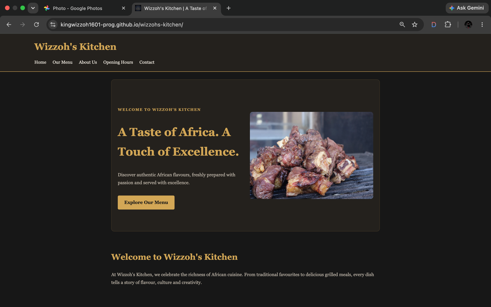
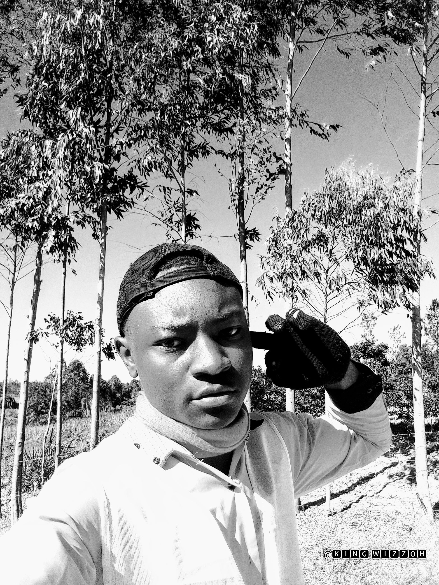

Wizzoh's Kitchen
A multi-page African restaurant website built using HTML and CSS, featuring a menu, business hours, contact page and responsive design.
HTML5 · CSS3 · Git · GitHub Pages
View Live Project ↗HELLO, WORLD! I'M
Exploring technology, developing practical skills and transforming ideas into meaningful solutions.
BUILD THE MIND. MASTER THE SKILL. CREATE THE FUTURE.

A LITTLE ABOUT ME
I am a Microprocessor Technology and Instrumentation student at the University of Nairobi, passionate about technology, innovation, entrepreneurship and continuous personal growth. I enjoy learning, exploring ideas, solving problems and transforming concepts into practical solutions.
More About Me →SELECTED WORK

A multi-page African restaurant website built using HTML and CSS, featuring a menu, business hours, contact page and responsive design.
HTML5 · CSS3 · Git · GitHub Pages
View Live Project ↗